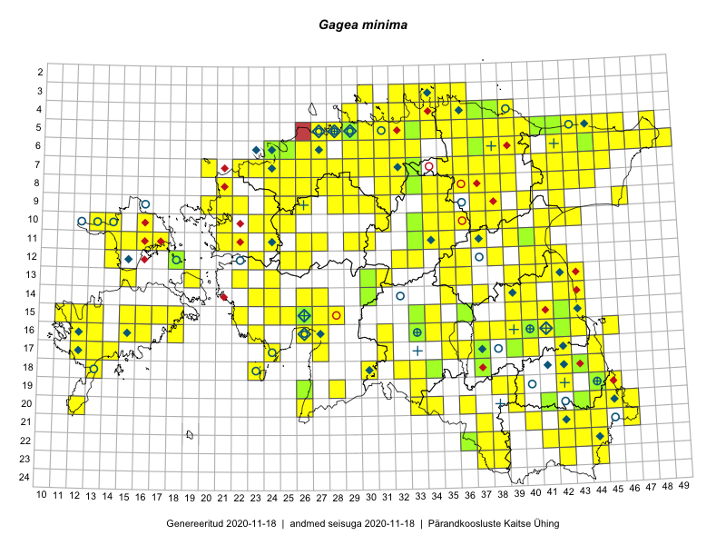

Gagea minima
Uuendatud: 2016-12-01
Kaardile koondatud taksonid: Gagea minima (L.) Ker Gawl.

Kaart põhineb 428 kirjel, neist vaatlusi 420 ja eksemplare 8.
Kuvatud viited 20 esimesele andmebaasikirjele, ülejäänud PlutoFis
- Thea Kull: 2015-04-27: 07-45: ala
- Meeli Mesipuu, Kadri Tali: 2015-04-30: 17-40: ala
- Meeli Mesipuu, Kadri Tali: 2015-04-30: 17-39: ala
- Meeli Mesipuu, Liina Oja: 2015-04-27: 08-43: ala
- Peedu Saar, Meeli Mesipuu: 2015-05-05: 16-38: GPS punkt
- Peedu Saar: 2015-05-09: 13-30: ala
- Peedu Saar, Timo Luhamäe: 2015-05-10: 12-32: ala
- Peedu Saar, Timo Luhamäe: 2015-05-10: 12-32: GPS punkt
- Peedu Saar, Timo Luhamäe: 2015-05-11: 12-36: ala
- Peedu Saar, Timo Luhamäe: 2015-05-11: 12-36: GPS punkt
- Peedu Saar, Timo Luhamäe: 2015-05-12: 07-35: ala
- Peedu Saar, Timo Luhamäe: 2015-05-12: 07-36: ala
- Peedu Saar, Timo Luhamäe: 2015-05-12: 07-36: GPS punkt
- Peedu Saar, Timo Luhamäe: 2015-05-13: 06-39: ala
- Peedu Saar, Timo Luhamäe: 2015-05-13: 06-39: GPS punkt
- Peedu Saar, Timo Luhamäe: 2015-05-13: 06-40: ala
- Peedu Saar, Timo Luhamäe: 2015-05-13: 06-40: GPS punkt
- Peedu Saar, Timo Luhamäe: 2015-05-13: 07-39: ala
- Peedu Saar: 2015-05-14: 10-43: ala
- Peedu Saar: 2015-05-14: 10-43: GPS punkt